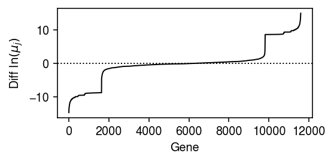
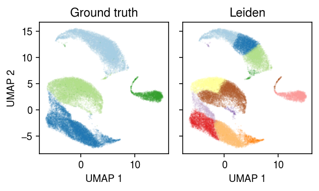
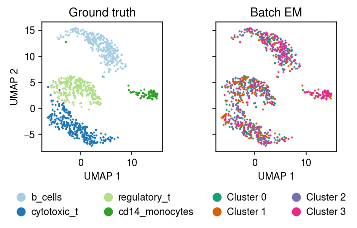
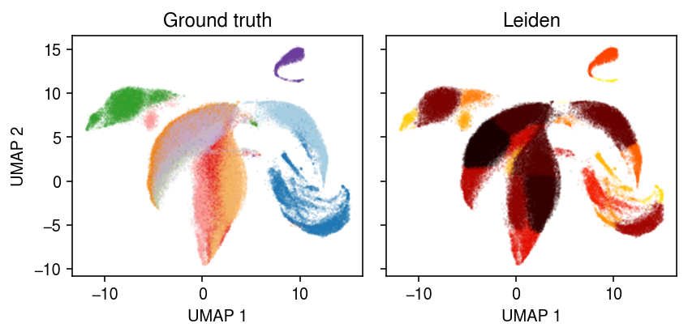

Model-based clustering of scRNA-seq data
Table of Contents
Introduction
Two major strategies for clustering scRNA-seq data are:
- Building a \(k\)-nearest neighbor graph on the data, and applying a community detection algorithm (e.g., Blondel et al. 2008, Traag et al. 2018)
- Fitting a topic model to the data (e.g., Dey et al. 2017, Gonzáles-Blas et al. 2019)
The main disadvantage of strategy (1) is that, as commonly applied to transformed counts, it does not separate measurement error and biological variation of interest. The main disadvantage of strategy (2) is that it does not account for transcriptional noise (Raj 2008). Here, we develop a simple model-based clustering algorithm which addresses both of these issues.
Setup
import anndata import mpebpm.gam_mix import mpebpm.sgd import numpy as np import pandas as pd import pickle import scanpy as sc import scipy.optimize as so import scipy.special as sp import scipy.stats as st import scmodes import sklearn.linear_model as sklm import sklearn.metrics as skm import sklearn.model_selection as skms import time import torch import torch.utils.data as td import umap
import rpy2.robjects.packages import rpy2.robjects.pandas2ri rpy2.robjects.pandas2ri.activate() ft = rpy2.robjects.packages.importr('fastTopics') matrix = rpy2.robjects.packages.importr('Matrix')
%matplotlib inline %config InlineBackend.figure_formats = set(['retina'])
import colorcet import matplotlib import matplotlib.pyplot as plt plt.rcParams['figure.facecolor'] = 'w' plt.rcParams['font.family'] = 'Nimbus Sans'
Methods
Model specification
We assume \( \DeclareMathOperator\Gam{Gamma} \DeclareMathOperator\Mult{Multinomial} \DeclareMathOperator\N{\mathcal{N}} \DeclareMathOperator\Pois{Poisson} \DeclareMathOperator\diag{diag} \DeclareMathOperator\KL{\mathcal{KL}} \newcommand\kl[2]{\KL(#1\;\Vert\;#2)} \newcommand\xiplus{x_{i+}} \newcommand\mi{\mathbf{I}} \newcommand\vb{\mathbf{b}} \newcommand\vu{\mathbf{u}} \newcommand\vx{\mathbf{x}} \newcommand\vz{\mathbf{z}} \newcommand\vlambda{\boldsymbol{\lambda}} \newcommand\vmu{\boldsymbol{\mu}} \newcommand\vphi{\boldsymbol{\phi}} \newcommand\vpi{\boldsymbol{\pi}} \)
\begin{align} x_{ij} \mid \xiplus, \lambda_{ij} &\sim \Pois(\xiplus \lambda_{ij})\\ \lambda_{ij} \mid \vpi_i, \vmu_k, \vphi_k &\sim \sum_{k=1}^{K} \pi_{ik} \Gam(\phi_{kj}^{-1}, \phi_{kj}^{-1}\mu_{kj}^{-1}), \end{align}where
- \(x_{ij}\) denotes the number of molecules of gene \(j = 1, \ldots, p\) observed in cell \(i = 1, \ldots, n\)
- \(\xiplus \triangleq \sum_j x_{ij}\) denotes the total number of molecules observed in cell \(i\)
- \(\vpi_i\) denotes cluster assignment probabilities for cell \(i\)
- \(\vmu_k\) denotes the cluster “centroid” for cluster \(k\), and \(\vphi_k\) describes stochastic perturbations within each cluster
The intuition behind this model is that each cluster \(k\) is defined by a collection of independent Gamma distributions (parameterized by shape and rate), one per gene \(j\), which describe the distribution of true gene expression for each gene in each cluster (Sarkar and Stephens 2020). In this parameterization, each Gamma distribution has mean \(\mu_{kj}\) and variance \(\mu_{kj}^2\phi_{kj}\). Under this model, the marginal likelihood is a mixture of negative binomials
\begin{equation} p(x_{ij} \mid \xiplus, \vpi_i, \vmu_k, \vphi_k) = \sum_{k=1}^{K} \pi_{ik} \frac{\Gamma(x_{ij} + 1 / \phi_{kj})}{\Gamma(1 / \phi_{kj})\Gamma(x_{ij} + 1)}\left(\frac{\xiplus\mu_{kj}\phi_{kj}}{1 + \xiplus\mu_{kj}\phi_{kj}}\right)^{x_{ij}} \left(\frac{1}{1 + \xiplus\mu_{kj}\phi_{kj}}\right)^{1/\phi_{kj}}. \end{equation}EM for Poisson–Gamma-mixture
We can estimate \(\vpi, \vmu, \vphi\) by maximizing the likelihood using an EM algorithm. Letting \(z_{ik} \in \{0, 1\}\) indicate whether cell \(i\) is assigned to cluster \(k\), the exact posterior
\begin{align} q(z_{i1}, \ldots, z_{iK}) &\triangleq p(z_{ik} \mid x_{ij}, \xiplus, \vmu_k, \vphi_k) = \Mult(1, \alpha_{i1}, \ldots, \alpha_{iK})\\ \alpha_{ik} &\propto \sum_j \frac{\Gamma(x_{ij} + 1 / \phi_{kj})}{\Gamma(1 / \phi_{kj})\Gamma(x_{ij} + 1)}\left(\frac{\xiplus\mu_{kj}\phi_{kj}}{1 + \xiplus\mu_{kj}\phi_{kj}}\right)^{x_{ij}} \left(\frac{1}{1 + \xiplus\mu_{kj}\phi_{kj}}\right)^{1/\phi_{kj}}. \end{align}The expected log joint probability with respect to \(q\)
\begin{multline} E_q[\ln p(x_{ij}, z_{ik} \mid \xiplus, \vpi_i, \vmu_k, \vphi_k)] = E_q[z_{ik}] \Biggl[\ln \pi_{ik} + x_{ij} \ln\left(\frac{\xiplus\mu_{kj}\phi_{kj}}{1 + \xiplus\mu_{kj}\phi_{kj}}\right)\\ - \phi_{kj}^{-1} \ln(1 + \xiplus\mu_{kj}\phi_{kj}) + \ln\Gamma(x_{ij} + 1 / \phi_{kj}) - \ln\Gamma(1 / \phi_{kj}) - \ln\Gamma(x_{ij} + 1)\Biggr]. \end{multline}In the E step, the necessary expectations are analytic. In the M step, we can improve the expected log joint probability, e.g. by (batch) gradient descent.
Amortized inference
An alternative algorithm, which is amenable to stochastic gradient descent and online learning, is to use the fact that EM can be viewed as maximizing the evidence lower bound (Neal and Hinton 1998)
\begin{align} \max_{\theta} \ln p(x \mid \theta) &= \max_{q, \theta} \ln p(x \mid \theta) - \kl{q(z)}{p(z \mid x, \theta)}\\ &= \max_{q, \theta} E_q[\ln p(x \mid z, \theta)] - \kl{q(z)}{p(z \mid \theta)}. \end{align}Exact EM corresponds to (fully) alternately optimizing \(q^* = p(z \mid x, \theta)\) and \(\theta\). However, we can instead amortize inference (Gershman and Goodman 2014, Kingma and Welling 2014, Rezende et al. 2014), estimating a variational approximation parameterized by a neural network \(f_z\) mapping \(\vx_i \rightarrow \vz_i\)
\begin{align} p(z_{i1}, \ldots, z_{iK} \mid \vpi) &= \Mult(1, \vpi)\\ q(z_{i1}, \ldots, z_{iK} \mid \vx_i) &= \Mult(1, f_z(\vx_i)). \end{align}The evidence lower bound is analytic
\begin{multline} \mathcal{L} = \sum_{i, k} (f_z(\vx_i))_k \Biggl[\ln\left(\frac{\pi_{ik}}{(f_z(\vx_i))_k}\right) + \sum_j \biggl[ x_{ij} \ln\left(\frac{\xiplus\mu_{kj}\phi_{kj}}{1 + \xiplus\mu_{kj}\phi_{kj}}\right) - \phi_{kj}^{-1} \ln(1 + \xiplus\mu_{kj}\phi_{kj})\\ + \ln\Gamma(x_{ij} + 1 / \phi_{kj}) - \ln\Gamma(1 / \phi_{kj}) - \ln\Gamma(x_{ij} + 1)\biggr]\Biggr], \end{multline}and can be optimized using SGD.
Simulation
Simulate from the model.
def simulate(n, p, k, s=1e4, seed=0): rng = np.random.default_rng(seed) z = pd.get_dummies(np.argmax(rng.uniform(size=(n, k)), axis=1)).values # Values from Sarkar et al. 2019 log_mean = rng.uniform(-12, -6, size=(p, k)) log_inv_disp = rng.uniform(0, 4, size=(p, k)) lam = rng.negative_binomial(n=np.exp(z @ log_inv_disp.T), p=1 / (1 + s * (z @ np.exp(log_mean - log_inv_disp).T))) x = rng.poisson(lam) return x, z, log_mean, log_inv_disp
Results
Simulated example
Simulate from the model.
x, z, log_mean, log_inv_disp = simulate(n=100, p=500, k=4, seed=1)
Fit EM, starting from a random initialization.
import imp; imp.reload(mpebpm.gam_mix) k = 4 seed = 0 lr = 1e-2 num_epochs = 50 max_em_iters = 10 torch.manual_seed(seed) fit = mpebpm.gam_mix.ebpm_gam_mix_em( x=x, s=x.sum(axis=1, keepdims=True), k=k, lr=lr, num_epochs=num_epochs, max_em_iters=max_em_iters, log_dir=f'runs/nbmix/sim-{k}-{seed}-{lr:.1g}-{num_epochs}-{max_em_iters}')
Evaluate the clustering accuracy.
zhat = pd.get_dummies(np.argmax(fit[-1], axis=1)).values.astype(bool) idx = np.array([np.argmax(z[zhat[:,k]].sum(axis=0)) for k in range(4)]) pd.Series({ 'accuracy': (np.argmax(z, axis=1) == idx[np.argmax(zhat, axis=1)]).mean(), 'log_loss': np.where(z[:,idx], -np.log(fit[-1]), 0).sum(), 'nmi': skm.normalized_mutual_info_score(np.argmax(z, axis=1), idx[np.argmax(zhat, axis=1)]), 'ari': skm.adjusted_rand_score(np.argmax(z, axis=1), idx[np.argmax(zhat, axis=1)]) })
accuracy 1.0 log_loss 0.0 nmi 1.0 ari 1.0 dtype: float64
Real data example
Read sorted immune cell scRNA-seq data (Zheng et al. 2017).
dat = anndata.read_h5ad('/scratch/midway2/aksarkar/ideas/zheng-10-way.h5ad')
Get 256 B cells and 256 cytotoxic T cells.
b_cells = dat[dat.obs['cell_type'] == 'b_cells'] sc.pp.subsample(b_cells, n_obs=256, random_state=0) t_cells = dat[dat.obs['cell_type'] == 'cytotoxic_t'] sc.pp.subsample(t_cells, n_obs=256) temp = b_cells.concatenate(t_cells) sc.pp.filter_genes(temp, min_counts=1)
Plot a UMAP embedding of the data, coloring points by the ground truth labels.
sc.pp.pca(temp) sc.pp.neighbors(temp) sc.tl.umap(temp)
Write out the estimated embedding.
temp.write('/scratch/midway2/aksarkar/singlecell/nbmix-example.h5ad')
Read the annotated data.
temp = anndata.read_h5ad('/scratch/midway2/aksarkar/singlecell/nbmix-example.h5ad')
cm = plt.get_cmap('Dark2') plt.clf() plt.gcf().set_size_inches(3, 3) for i, c in enumerate(temp.obs['cell_type'].unique()): plt.plot(*temp[temp.obs['cell_type'] == c].obsm["X_umap"].T, c=cm(i), marker='.', ms=2, lw=0, label=f'{c}') plt.legend(frameon=False, markerscale=4, handletextpad=0) plt.xlabel('UMAP 1') plt.ylabel('UMAP 2') plt.tight_layout()

Leiden algorithm
Apply the Leiden algorithm (Traag et al. 2018) to the data (<1 s).
sc.tl.leiden(temp, random_state=0)
cm = plt.get_cmap('Dark2') plt.clf() plt.gcf().set_size_inches(3, 3) for i, c in enumerate(temp.obs['leiden'].unique()): plt.plot(*temp[temp.obs['leiden'] == c].obsm["X_umap"].T, c=cm(i), marker='.', ms=2, lw=0, label=f'Cluster {i}') plt.legend(frameon=False, markerscale=4, handletextpad=0) plt.xlabel('UMAP 1') plt.ylabel('UMAP 2') plt.tight_layout()
MPEBPM
First, start from the ground truth \(z\) (labels), and estimate the Gamma expression models.
fit0 = mpebpm.sgd.ebpm_gamma( temp.X, onehot=pd.get_dummies(temp.obs['cell_type']).values, batch_size=32, num_epochs=320, shuffle=True, log_dir='runs/nbmix/pretrain/')
np.savez('/scratch/midway2/aksarkar/singlecell/nbmix-example-pretrain.npz', fit0)
with np.load('/scratch/midway2/aksarkar/singlecell/nbmix-example-pretrain.npz') as f: fit0 = f['arr_0']
y = pd.get_dummies(temp.obs['cell_type']).values s = temp.X.sum(axis=1) nb_llik = y.T @ st.nbinom(n=np.exp(y @ fit0[1]), p=1 / (1 + s.A * (y @ np.exp(fit0[0] - fit0[1])))).logpmf(temp.X.A)
For comparison, estimate a point mass expression model for each gene, for each cluster.
y = pd.get_dummies(temp.obs['cell_type']).values s = temp.X.sum(axis=1) fit_pois = (y.T @ temp.X) / (y.T @ s) pois_llik = y.T @ st.poisson(mu=s.A * (y @ fit_pois).A).logpmf(temp.X.A)
For each gene, for each cluster, plot the log likelihood under the point mass and Gamma expression models.
plt.clf() fig, ax = plt.subplots(1, 2, sharey=True) fig.set_size_inches(4.5, 2.5) lim = [-1500, 0] for i, (a, t) in enumerate(zip(ax, ['B cell', 'Cytotoxic T'])): a.scatter(pois_llik[i], nb_llik[i], c='k', s=1, alpha=0.2) a.plot(lim, lim, c='r', lw=1, ls=':') a.set_xlim(lim) a.set_ylim(lim) a.set_title(t) a.set_xlabel('Poisson log lik') ax[0].set_ylabel('NB log lik') fig.tight_layout()

Look at the differences in the estimated mean parameter for each gene, to see how many genes are informative about the labels.
query = np.sort(np.diff(fit0[0], axis=0).ravel()) plt.clf() plt.gcf().set_size_inches(4, 2) plt.plot(query, lw=1, c='k') plt.axhline(y=0, lw=1, ls=':', c='k') plt.xlabel('Gene') plt.ylabel(r'Diff $\ln(\mu_j)$') plt.tight_layout()

Estimate the cluster weights.
L = mpebpm.gam_mix._nb_mix_llik( x=torch.tensor(temp.X.A, dtype=torch.float), s=torch.tensor(temp.X.sum(axis=1), dtype=torch.float), log_mean=torch.tensor(fit0[0], dtype=torch.float), log_inv_disp=torch.tensor(fit0[1], dtype=torch.float)) zhat = torch.nn.functional.softmax(L, dim=1)
Plot the log likelihood difference between the two components for each data point.
plt.clf() plt.gcf().set_size_inches(4, 2) plt.plot(np.diff(L).ravel(), lw=0, marker='.', c='k', ms=2) plt.axhline(y=0, lw=1, ls=':', c='k') plt.xlabel('Cell') plt.ylabel('Diff log lik') plt.tight_layout()
Compute the cross entropy between the estimated \(\hat{z}\) and the ground truth.
torch.nn.functional.binary_cross_entropy( zhat, torch.tensor(pd.get_dummies(temp.obs['cell_type']).values, dtype=torch.float))
tensor(0.)
Compute a weighted log likelihood.
w = torch.rand([512, 2]) w /= w.sum(dim=1).unsqueeze(-1) m, _ = L.max(dim=1, keepdim=True) (m + torch.log(w * torch.exp(L - m) + 1e-8)).mean()
tensor(-1872.7723)
Try fitting the model from a random initialization (4 s).
import imp; imp.reload(mpebpm.gam_mix) torch.manual_seed(0) fit = mpebpm.gam_mix.ebpm_gam_mix_em( x=temp.X.A, s=temp.X.sum(axis=1), y=torch.tensor(pd.get_dummies(temp.obs['cell_type']).values, dtype=torch.float).cuda(), k=2, num_epochs=50, max_em_iters=8, log_dir='runs/nbmix/mpebpm-random-init0-pois-50-8')
Compare the log likelihood using the ground truth labels to the log likelihood using the estimated cluster weights.
pd.Series({'ground_truth': nb_llik.mean(),
'est': (fit[2].T @ st.nbinom(n=np.exp(fit[2] @ fit[1]), p=1 / (1 + s.A * (fit[2] @ np.exp(fit[0] - fit[1])))).logpmf(temp.X.A)).mean()})
ground_truth -41.151726 est -41.145436 dtype: float64
Compute the cross entropy between the estimated \(\hat{z}\) and the ground truth.
torch.min( torch.nn.functional.binary_cross_entropy( torch.tensor(fit[-1], dtype=torch.float), torch.tensor(pd.get_dummies(temp.obs['cell_type']).values, dtype=torch.float)), torch.nn.functional.binary_cross_entropy( torch.tensor(1 - fit[-1], dtype=torch.float), torch.tensor(pd.get_dummies(temp.obs['cell_type']).values, dtype=torch.float)))
tensor(0.)
Plot the UMAP, colored by the fitted clusters.
cm = plt.get_cmap('Dark2') plt.clf() plt.gcf().set_size_inches(3, 3) for i in range(fit[-1].shape[1]): plt.plot(*temp[fit[-1][:,i].astype(bool)].obsm["X_umap"].T, c=cm(i), marker='.', ms=2, lw=0, label=f'Cluster {i}') plt.legend(frameon=False, markerscale=4, handletextpad=0) plt.xlabel('UMAP 1') plt.ylabel('UMAP 2') plt.tight_layout()
Amortized inference
Construct the amortized inference model, initializing \(\vmu_k, \vphi_k\) from the MLE starting from the ground-truth labels.
query = torch.tensor(temp.X.A) s = torch.tensor(temp.X.sum(axis=1)) fit = mpebpm.gam_mix.EBPMGammaMix( p=temp.shape[1], k=2, log_mean=fit0[0], log_inv_disp=fit0[1])
Look at the initial loss.
(
mpebpm.gam_mix._nb_mix_loss(
fit.encoder.forward(query),
query,
s,
fit.log_mean,
fit.log_inv_disp),
mpebpm.gam_mix._nb_mix_loss(
torch.tensor(pd.get_dummies(temp.obs['cell_type']).values),
query,
s,
fit.log_mean,
fit.log_inv_disp)
)
(tensor(1927253.3750, grad_fn=<NegBackward>), tensor(1926631.7500, grad_fn=<NegBackward>))
Look at the gradients with respect to the encoder network weights.
temp_loss = mpebpm.gam_mix._nb_mix_loss( fit.encoder.forward(query), query, torch.tensor(temp.X.sum(axis=1)), fit.log_mean, fit.log_inv_disp) temp_loss.retain_grad() temp_loss.backward() torch.norm(fit.encoder[0].weight.grad)
tensor(31154.1895)
Perform amortized inference, initializing \(\vmu_k, \vphi_k\) at the batch GD clustering solution.
import imp; imp.reload(mpebpm.gam_mix) torch.manual_seed(0) fit1 = mpebpm.gam_mix.EBPMGammaMix( p=temp.shape[1], k=2, log_mean=fit0[0], log_inv_disp=fit0[1]) fit1.fit( x=temp.X.A, s=temp.X.sum(axis=1), y=pd.get_dummies(temp.obs['cell_type']).values, lr=1e-3, batch_size=64, shuffle=True, num_epochs=10, log_dir='runs/nbmix/ai-freeze-64-1e-3-10')
EBPMGammaMix( (encoder): Sequential( (0): Linear(in_features=11590, out_features=128, bias=True) (1): ReLU() (2): Linear(in_features=128, out_features=2, bias=True) (3): Softmax(dim=1) ) )
Compute the cross entropy loss over the posterior mean cluster assignments.
zhat = fit1.forward(query.cuda()).detach().cpu().numpy() torch.nn.functional.binary_cross_entropy( torch.tensor(zhat, dtype=torch.float), torch.tensor(pd.get_dummies(temp.obs['cell_type']).values, dtype=torch.float))
tensor(4.5151e-05)
Plot the approximate posterior over cluster assignments for each point.
cm = plt.get_cmap('Dark2') plt.clf() fig, ax = plt.subplots(1, 2, sharex=True, sharey=True) fig.set_size_inches(4.5, 2.5) for i, a in enumerate(ax): a.scatter(*temp.obsm["X_umap"].T, s=4, c=np.hstack((np.tile(np.array(cm(i)[:3]), zhat.shape[0]).reshape(-1, 3), zhat[:,i].reshape(-1, 1)))) a.set_xlabel('UMAP 1') ax[0].set_ylabel('UMAP 2') fig.tight_layout()

Try amortized inference, using the first minibatch to initialize.
import imp; imp.reload(mpebpm.gam_mix) torch.manual_seed(0) np.histogram(np.argmax(mpebpm.gam_mix.EBPMGammaMix(p=temp.shape[1], k=2).forward(query).detach().cpu().numpy(), axis=1), np.arange(3))
(array([393, 119]), array([0, 1, 2]))
import imp; imp.reload(mpebpm.gam_mix) torch.manual_seed(1) fit1 = mpebpm.gam_mix.EBPMGammaMix( p=temp.shape[1], k=2) fit1.fit( x=temp.X.A, s=temp.X.sum(axis=1), y=pd.get_dummies(temp.obs['cell_type']).values, lr=1e-2, batch_size=64, shuffle=True, num_epochs=100, log_dir='runs/nbmix/ai-hack1-64-1e-2-100')
plt.clf() plt.gcf().set_size_inches(3, 3) plt.plot(*fit1.log_mean.detach().cpu().numpy(), marker='.', lw=0, ms=1, c='k') plt.xlabel('Component 1 $\ln\mu$') plt.ylabel('Component 2 $\ln\mu$') plt.tight_layout()
(Full) 2-way example
Apply the standard methodology (~1 min).
mix2 = dat[dat.obs['cell_type'].isin(['cytotoxic_t', 'b_cells'])] sc.pp.filter_genes(mix2, min_counts=1) sc.pp.pca(mix2, zero_center=False) sc.pp.neighbors(mix2) sc.tl.leiden(mix2) sc.tl.umap(mix2) mix2
AnnData object with n_obs × n_vars = 20294 × 17808 obs: 'barcode', 'cell_type', 'leiden' var: 'ensg', 'name', 'n_cells', 'n_counts' uns: 'pca', 'neighbors', 'leiden', 'umap' obsm: 'X_pca', 'X_umap' varm: 'PCs' obsp: 'distances', 'connectivities'
cm = plt.get_cmap('Paired') plt.clf() fig, ax = plt.subplots(1, 2, sharex=True, sharey=True) fig.set_size_inches(4.5, 4) for a, k, t in zip(ax, ['cell_type', 'leiden'], ['Ground truth', 'Leiden']): for i, c in enumerate(mix2.obs[k].unique()): a.plot(*mix2[mix2.obs[k] == c].obsm["X_umap"].T, c=cm(i), marker='.', ms=1, lw=0, alpha=0.1, label=f'{k}_{i}') leg = a.legend(frameon=False, markerscale=8, handletextpad=0, loc='upper center', bbox_to_anchor=(.5, -.25), ncol=2) for h in leg.legendHandles: h._legmarker.set_alpha(1) a.set_xlabel('UMAP 1') a.set_title(t) ax[0].set_ylabel('UMAP 2') fig.tight_layout()
Take a subsample to run batch EM.
mix2sub = sc.pp.subsample(mix2, n_obs=1000, random_state=1, copy=True) mix2sub.obs['cell_type'].value_counts()
cytotoxic_t 513 b_cells 487 Name: cell_type, dtype: int64
Run batch EM (45 s).
import imp; imp.reload(mpebpm.gam_mix) k = 2 seed = 0 lr = 1e-2 num_epochs = 50 max_em_iters = 10 torch.manual_seed(seed) fit = mpebpm.gam_mix.ebpm_gam_mix_em( x=mix2sub.X.A, s=mix2sub.X.sum(axis=1), k=k, lr=lr, num_epochs=num_epochs, max_em_iters=max_em_iters, log_dir=f'runs/nbmix/mix2-init-{k}-{seed}-{lr:.1g}-{num_epochs}-{max_em_iters}')
plt.clf() fig, ax = plt.subplots(1, 2, sharex=True, sharey=True) plt.gcf().set_size_inches(5, 3.5) cm = plt.get_cmap('Paired') for i, c in enumerate(mix2sub.obs['cell_type'].unique()): ax[0].plot(*mix2sub[mix2sub.obs['cell_type'] == c].obsm["X_umap"].T, c=cm(i), marker='.', ms=2, lw=0, label=f'{c}') ax[0].set_title('Ground truth') leg = ax[0].legend(frameon=False, markerscale=8, handletextpad=0, loc='upper center', bbox_to_anchor=(.5, -.25), ncol=2) for h in leg.legendHandles: h._legmarker.set_alpha(1) z = pd.get_dummies(np.argmax(fit[-1], axis=1)).values.astype(bool) cm = plt.get_cmap('Dark2') for i in range(z.shape[1]): ax[1].plot(*mix2sub[z[:,i]].obsm["X_umap"].T, c=cm(i), marker='.', ms=2, lw=0, label=f'Cluster {i}') ax[1].set_title('Batch EM') leg = ax[1].legend(frameon=False, markerscale=8, handletextpad=0, loc='upper center', bbox_to_anchor=(.5, -.25), ncol=2) for h in leg.legendHandles: h._legmarker.set_alpha(1) for a in ax: a.set_xlabel('UMAP 1') ax[0].set_ylabel('UMAP 2') fig.tight_layout()
Run amortized inference on the full data set, initializing components from the batch EM solution. (Perfect accuracy in ~10 s, 49 s total)
import imp; imp.reload(mpebpm.gam_mix) seed = 1 lr = 1e-3 num_epochs = 10 torch.manual_seed(0) fit1 = mpebpm.gam_mix.EBPMGammaMix( p=mix2.shape[1], k=2, log_mean=fit[0], log_inv_disp=fit[1]) fit1.fit( x=mix2.X.A, s=mix2.X.sum(axis=1), y=pd.get_dummies(mix2.obs['cell_type']).values, lr=1e-3, batch_size=64, shuffle=True, num_epochs=10, log_dir=f'runs/nbmix/mix2-full-{seed}-{lr:.1g}-{num_epochs}')
EBPMGammaMix( (encoder): Sequential( (0): Log1p() (1): Linear(in_features=17808, out_features=128, bias=True) (2): ReLU() (3): Linear(in_features=128, out_features=2, bias=True) (4): Softmax(dim=1) ) )
x = mix2.X data = mpebpm.sparse.SparseDataset( mpebpm.sparse.CSRTensor(x.data, x.indices, x.indptr, x.shape, dtype=torch.float).cuda(), torch.tensor(mix2.X.sum(axis=1), dtype=torch.float).cuda()) collate_fn = getattr(data, 'collate_fn', td.dataloader.default_collate) data = td.DataLoader(data, batch_size=64, shuffle=False, collate_fn=data.collate_fn) zhat = [] with torch.no_grad(): for x, s in data: zhat.append(fit1.forward(x).cpu().numpy())
mix2.obs['comp'] = np.argmax(np.vstack(zhat), axis=1)
plt.clf() fig, ax = plt.subplots(1, 2, sharex=True, sharey=True) fig.set_size_inches(5, 3) for a, k, t, cm in zip(ax, ['cell_type', 'comp'], ['Ground truth', 'Online'], ['Paired', 'Dark2']): for i, c in enumerate(mix2.obs[k].unique()): a.plot(*mix2[mix2.obs[k] == c].obsm["X_umap"].T, c=plt.get_cmap(cm)(i), marker='.', ms=1, lw=0, alpha=0.1, label=f'{k}_{i}') leg = a.legend(frameon=False, markerscale=8, handletextpad=0, loc='upper center', bbox_to_anchor=(.5, -.25), ncol=2) for h in leg.legendHandles: h._legmarker.set_alpha(1) a.set_xlabel('UMAP 1') a.set_title(t) ax[0].set_ylabel('UMAP 2') fig.tight_layout()
4-way example
Pick 4 cell types which a priori should be easy to distinguish. Apply the standard methodology (1.4 minutes).
%%time mix4 = dat[dat.obs['cell_type'].isin(['cytotoxic_t', 'regulatory_t', 'b_cells', 'cd14_monocytes'])] sc.pp.filter_genes(mix4, min_counts=1) sc.pp.pca(mix4, zero_center=False) sc.pp.neighbors(mix4) sc.tl.leiden(mix4) sc.tl.umap(mix4) mix4
AnnData object with n_obs × n_vars = 33169 × 19241 obs: 'barcode', 'cell_type', 'leiden' var: 'ensg', 'name', 'n_cells', 'n_counts' uns: 'pca', 'neighbors', 'leiden', 'umap' obsm: 'X_pca', 'X_umap' varm: 'PCs' obsp: 'distances', 'connectivities'
mix4.write('/scratch/midway2/aksarkar/singlecell/mix4.h5ad')
mix4 = anndata.read_h5ad('/scratch/midway2/aksarkar/singlecell/mix4.h5ad')
Plot the data, colored by ground truth label.
cm = plt.get_cmap('Paired') plt.clf() fig, ax = plt.subplots(1, 2, sharex=True, sharey=True) fig.set_size_inches(4.5, 2.75) for a, k, t in zip(ax, ['cell_type', 'leiden'], ['Ground truth', 'Leiden']): for i, c in enumerate(mix4.obs[k].unique()): a.plot(*mix4[mix4.obs[k] == c].obsm["X_umap"].T, c=cm(i), marker='.', ms=1, lw=0, alpha=0.1) a.set_title(t) for a in ax: a.set_xlabel('UMAP 1') ax[0].set_ylabel('UMAP 2') fig.tight_layout()

Assign each community detected by the Leiden algorithm to a ground truth label, based on the maximally represented label in each community, then assess the accuracy of the clustering.
z = pd.get_dummies(mix4.obs['cell_type']).values.astype(bool) zhat = pd.get_dummies(mix4.obs['leiden']).values.astype(bool) idx = np.array([np.argmax(z[zhat[:,k]].sum(axis=0)) for k in range(zhat.shape[1])]) (np.argmax(z, axis=1) == idx[np.argmax(zhat, axis=1)]).mean()
0.9918900177876934
Use a subset of the data to run batch EM.
mix4sub = sc.pp.subsample(mix4, n_obs=1000, random_state=1, copy=True) mix4sub.obs['cell_type'].value_counts()
b_cells 320 cytotoxic_t 315 regulatory_t 290 cd14_monocytes 75 Name: cell_type, dtype: int64
Evaluate the accuracy of Leiden clustering in this subset.
z = pd.get_dummies(mix4sub.obs['cell_type']).values.astype(bool) zhat = pd.get_dummies(mix4sub.obs['leiden']).values.astype(bool) idx = np.array([np.argmax(z[zhat[:,k]].sum(axis=0)) for k in range(zhat.shape[1])]) (np.argmax(z, axis=1) == idx[np.argmax(zhat, axis=1)]).mean()
0.996
Evaluate the normalized mutual information.
skm.normalized_mutual_info_score(np.argmax(z, axis=1), idx[np.argmax(zhat, axis=1)])
0.9613444754486798
Evaluate the adjusted Rand index.
skm.adjusted_rand_score(np.argmax(z, axis=1), idx[np.argmax(zhat, axis=1)])
0.9779140374557265
As a sanity check, estimate the components given the ground truth labels, get the MAP estimate of the mixture weights given the components, and report the log loss of the MAP mixture assignments.
z = pd.get_dummies(mix4sub.obs['cell_type']).values num_epochs = 100 fit0 = mpebpm.sgd.ebpm_gamma( mix4sub.X, onehot=z, batch_size=32, num_epochs=num_epochs, shuffle=True, log_dir=f'runs/nbmix/mix4-init-gt-{num_epochs}') np.savez('mix4-oracle.npz', fit0) with torch.no_grad(): L = mpebpm.gam_mix._nb_mix_llik( x=torch.tensor(mix4sub.X.A, dtype=torch.float), s=torch.tensor(mix4sub.X.sum(axis=1), dtype=torch.float), log_mean=torch.tensor(fit0[0], dtype=torch.float), log_inv_disp=torch.tensor(fit0[1], dtype=torch.float)) zhat = torch.nn.functional.softmax(L, dim=1).cpu().numpy() loss = (z * np.log(zhat + 1e-16)).sum() loss
0.0
with np.load('mix4-oracle.npz') as f: fit0 = f['arr_0']
Run batch EM, starting from a random \(E[z]\).
import imp; imp.reload(mpebpm.gam_mix) k = 4 seed = 0 lr = 1e-2 num_epochs = 50 max_em_iters = 10 torch.manual_seed(seed) fit = mpebpm.gam_mix.ebpm_gam_mix_em( x=mix4sub.X.A, s=mix4sub.X.sum(axis=1), k=k, lr=lr, num_epochs=num_epochs, max_em_iters=max_em_iters, log_dir=f'runs/nbmix/mix4-init-{k}-{seed}-{lr:.1g}-{num_epochs}-{max_em_iters}') np.savez('mix4-init.npz', *fit)
with np.load('mix4-init.npz') as f: fit = [f['arr_0'], f['arr_1'], f['arr_2']]
Plot the MAP cluster assignments.
plt.clf() fig, ax = plt.subplots(1, 2, sharex=True, sharey=True) plt.gcf().set_size_inches(5, 3.5) cm = plt.get_cmap('Paired') for i, c in enumerate(mix4sub.obs['cell_type'].unique()): ax[0].plot(*mix4sub[mix4sub.obs['cell_type'] == c].obsm["X_umap"].T, c=cm(i), marker='.', ms=2, lw=0, label=f'{c}') ax[0].set_title('Ground truth') leg = ax[0].legend(frameon=False, markerscale=8, handletextpad=0, loc='upper center', bbox_to_anchor=(.5, -.25), ncol=2) for h in leg.legendHandles: h._legmarker.set_alpha(1) z = pd.get_dummies(np.argmax(fit[-1], axis=1)).values.astype(bool) cm = plt.get_cmap('Dark2') for i in range(z.shape[1]): ax[1].plot(*mix4sub[z[:,i]].obsm["X_umap"].T, c=cm(i), marker='.', ms=2, lw=0, label=f'Cluster {i}') ax[1].set_title('Batch EM') leg = ax[1].legend(frameon=False, markerscale=8, handletextpad=0, loc='upper center', bbox_to_anchor=(.5, -.25), ncol=2) for h in leg.legendHandles: h._legmarker.set_alpha(1) for a in ax: a.set_xlabel('UMAP 1') ax[0].set_ylabel('UMAP 2') fig.tight_layout()

Compare the expected log joint of the fitted model to the oracle log joint.
pi = torch.ones(4) / 4. with torch.no_grad(): oracle_log_joint = mpebpm.gam_mix._nb_mix_loss( z=torch.tensor(pd.get_dummies(mix4sub.obs['cell_type']).values, dtype=torch.float), x=torch.tensor(mix4sub.X.A, dtype=torch.float), s=torch.tensor(mix4sub.X.sum(axis=1), dtype=torch.float), log_mean=torch.tensor(fit0[0], dtype=torch.float), log_inv_disp=torch.tensor(fit0[1], dtype=torch.float), pi=pi).numpy() em_log_joint = mpebpm.gam_mix._nb_mix_loss( z=torch.tensor(fit[2], dtype=torch.float), x=torch.tensor(mix4sub.X.A, dtype=torch.float), s=torch.tensor(mix4sub.X.sum(axis=1), dtype=torch.float), log_mean=torch.tensor(fit[0], dtype=torch.float), log_inv_disp=torch.tensor(fit[1], dtype=torch.float), pi=pi).numpy() pd.Series({'oracle': oracle_log_joint, 'em': em_log_joint})
oracle 455.64493 em 467.37347 dtype: object
Look at marker gene expression, stratified by the ground truth labels, and by the MAP cluster assignments.
idx = np.where(mix4sub.var['name'] == 'CD74')[0] plt.clf() fig, ax = plt.subplots(3, 1) fig.set_size_inches(6, 4.5) grid = np.linspace(0, .05, 1000) ax[0].hist(mix4sub.X[:,idx].A.ravel(), bins=np.arange(mix4sub.X[:,idx].max() + 1), color='0.7') ax[0].set_title('CD74') ax[0].set_xlabel('Number of molecules') ax[0].set_ylabel('Number of cells') for a, cm, f, t, ls in zip(ax[1:], ['Paired', 'Dark2'], [fit0, fit], ['Oracle', 'Batch EM'], [mix4sub.obs['cell_type'].unique(), [f'Cluster {k}' for k in range(4)]]): for i, l in enumerate(ls): F = st.gamma(a=np.exp(f[1][i,idx]), scale=np.exp(f[0][i,idx] - f[1][i,idx])).cdf(grid) a.plot(grid, F, lw=1, c=plt.get_cmap(cm)(i), label=l) a.legend(frameon=False, loc='center left', bbox_to_anchor=(1, .5)) a.set_ylabel('CDF') ax[-1].set_xlabel('Latent gene expression') fig.tight_layout()
Fit NMF with \(k=4\).
temp = mix4sub.X.tocoo() y = matrix.sparseMatrix(i=pd.Series(temp.row + 1), j=pd.Series(temp.col + 1), x=pd.Series(temp.data), dims=pd.Series(temp.shape)) fit = ft.fit_poisson_nmf(y, k=4, numiter=100, method='scd', control=rpy2.robjects.ListVector({'extrapolate': True}), verbose=True) fit = {k: v for k, v in zip(fit.names, fit)}
Normalize the loadings/factors to get a topic model.
l = fit['L'] f = fit['F'] weights = l * f.sum(axis=0) scale = weights.sum(axis=1, keepdims=True) weights /= scale topics = f / f.sum(axis=0, keepdims=True)
Plot the correlation of the estimated topic weights against the ground truth labels.
r = np.corrcoef(pd.get_dummies(mix4sub.obs['cell_type']).T, weights.T)[:4,4:] plt.clf() plt.gcf().set_size_inches(3, 3) plt.imshow(r, cmap=colorcet.cm['coolwarm'], vmin=-1, vmax=1) plt.xticks(range(4), mix4sub.obs['cell_type'].unique(), rotation=90) plt.xlabel('Cell type') plt.yticks(range(4), range(4)) plt.ylabel('Topic') plt.tight_layout()
Estimate the log loss of topic weights against the ground truth labels. Assign topics to labels based on the maximum weight.
z = pd.get_dummies(mix4sub.obs['cell_type']).values.astype(bool) zhat = pd.get_dummies(np.argmax(weights, axis=1)).values.astype(bool) idx = np.array([np.argmax(z[zhat[:,k]].sum(axis=0)) for k in range(zhat.shape[1])]) -(z * np.log(weights[:,idx])).sum()
26991.17997391195
Use the maximal topic weight as the cluster assignment for each sample, and compute the accuracy against the ground truth labels.
(np.argmax(z, axis=1) == idx[np.argmax(zhat, axis=1)]).mean()
0.813
Evaluate the normalized mutual information.
skm.normalized_mutual_info_score(np.argmax(z, axis=1), idx[np.argmax(zhat, axis=1)])
0.729630650183215
Evaluate the adjusted Rand index.
skm.adjusted_rand_score(np.argmax(z, axis=1), idx[np.argmax(zhat, axis=1)])
0.6346534587723618
Look at the entropy of the topic weights, for samples which were (not) assigned to the correct cluster.
query = np.argmax(z, axis=1) != idx[np.argmax(zhat, axis=1)]
-(weights[query] * np.log(weights[query])).mean(), -(weights[~query] * np.log(weights[~query])).mean()
(0.16659664113615175, 0.07020479818554375)
Fit batch EM on the subset, initializing \(E[z]\) using the topic weights.
import imp; imp.reload(mpebpm.gam_mix) k = 4 seed = 0 lr = 1e-2 num_epochs = 50 max_em_iters = 10 torch.manual_seed(seed) fit_init_z = mpebpm.gam_mix.ebpm_gam_mix_em( x=mix4sub.X.A, s=mix4sub.X.sum(axis=1), z=weights, k=k, lr=lr, num_epochs=num_epochs, max_em_iters=max_em_iters, log_dir=f'runs/nbmix/mix4-init-z-{k}-{seed}-{lr:.1g}-{num_epochs}-{max_em_iters}')
For reference, compute the initial E step, given the topic weight initialization.
with torch.no_grad(): L = mpebpm.gam_mix._nb_mix_llik( x=torch.tensor(mix4sub.X.A, dtype=torch.float), s=torch.tensor(mix4sub.X.sum(axis=1), dtype=torch.float), log_mean=torch.tensor(np.log(topics).T, dtype=torch.float), log_inv_disp=torch.zeros(topics.T.shape, dtype=torch.float)).numpy()
Compute the average log likelihood difference between the maximum component and the others.
query = np.max(L, axis=1, keepdims=True) - L query[np.where(~np.isclose(query, 0))].mean()
2329.182
Estimate the log loss of cluster weights against the ground truth labels. Assign labels to clusters based on the maximum weight.
z = pd.get_dummies(mix4sub.obs['cell_type']).values.astype(bool) zhat = pd.get_dummies(np.argmax(fit_init_z[-1], axis=1)).values.astype(bool) idx = np.array([np.argmax(z[zhat[:,k]].sum(axis=0)) for k in range(4)]) np.where(z, -np.log(fit_init_z[-1][:,idx]), 0).sum()
inf
Use the maximal topic weight as the cluster assignment for each sample, and compute the accuracy against the ground truth labels.
(idx[np.argmax(zhat, axis=1)] == np.argmax(z, axis=1)).mean()
0.854
Evaluate the normalized mutual information.
skm.normalized_mutual_info_score(np.argmax(z, axis=1), idx[np.argmax(zhat, axis=1)])
0.7343759402985899
Evaluate the adjusted Rand index.
skm.adjusted_rand_score(np.argmax(z, axis=1), idx[np.argmax(zhat, axis=1)])
0.6751367652638485
Compare the cluster assignments from NMF to the cluster assignments from the mixture of NBs.
(np.argmax(fit_init_z[-1][:,idx], axis=1) == np.argmax(weights[:,idx], axis=1)).mean()
0.913
Plot the MAP cluster assignments.
plt.clf() fig, ax = plt.subplots(1, 2, sharex=True, sharey=True) plt.gcf().set_size_inches(5, 3.5) cm = plt.get_cmap('Paired') for i, c in enumerate(mix4sub.obs['cell_type'].unique()): ax[0].plot(*mix4sub[mix4sub.obs['cell_type'] == c].obsm["X_umap"].T, c=cm(i), marker='.', ms=2, lw=0, label=f'{c}') ax[0].set_title('Ground truth') leg = ax[0].legend(frameon=False, markerscale=8, handletextpad=0, loc='upper center', bbox_to_anchor=(.5, -.25), ncol=2) for h in leg.legendHandles: h._legmarker.set_alpha(1) z = pd.get_dummies(np.argmax(fit_init_z[-1], axis=1)).values.astype(bool) cm = plt.get_cmap('Dark2') for i in range(z.shape[1]): ax[1].plot(*mix4sub[z[:,i]].obsm["X_umap"].T, c=cm(i), marker='.', ms=2, lw=0, label=f'Cluster {i}') ax[1].set_title('Batch EM (initial $\mathrm{E}[z]$)') leg = ax[1].legend(frameon=False, markerscale=8, handletextpad=0, loc='upper center', bbox_to_anchor=(.5, -.25), ncol=2) for h in leg.legendHandles: h._legmarker.set_alpha(1) for a in ax: a.set_xlabel('UMAP 1') ax[0].set_ylabel('UMAP 2') fig.tight_layout()
Fit batch EM on the subset, initializing \(\mu\) using the topics.
import imp; imp.reload(mpebpm.gam_mix) k = 4 seed = 0 lr = 1e-2 num_epochs = 50 max_em_iters = 10 torch.manual_seed(seed) fit_init_mu = mpebpm.gam_mix.ebpm_gam_mix_em( x=mix4sub.X.A, s=mix4sub.X.sum(axis=1), log_mean=np.log(topics).T, k=k, lr=lr, num_epochs=num_epochs, max_em_iters=max_em_iters, log_dir=f'runs/nbmix/mix4-init-mu-{k}-{seed}-{lr:.1g}-{num_epochs}-{max_em_iters}')
Plot the MAP cluster assignments.
plt.clf() fig, ax = plt.subplots(1, 2, sharex=True, sharey=True) plt.gcf().set_size_inches(5, 3.5) cm = plt.get_cmap('Paired') for i, c in enumerate(mix4sub.obs['cell_type'].unique()): ax[0].plot(*mix4sub[mix4sub.obs['cell_type'] == c].obsm["X_umap"].T, c=cm(i), marker='.', ms=2, lw=0, label=f'{c}') ax[0].set_title('Ground truth') leg = ax[0].legend(frameon=False, markerscale=8, handletextpad=0, loc='upper center', bbox_to_anchor=(.5, -.25), ncol=2) for h in leg.legendHandles: h._legmarker.set_alpha(1) z = pd.get_dummies(np.argmax(fit_init_mu[-1], axis=1)).values.astype(bool) cm = plt.get_cmap('Dark2') for i in range(z.shape[1]): ax[1].plot(*mix4sub[z[:,i]].obsm["X_umap"].T, c=cm(i), marker='.', ms=2, lw=0, label=f'Cluster {i}') ax[1].set_title('Batch EM (initial $\mu$)') leg = ax[1].legend(frameon=False, markerscale=8, handletextpad=0, loc='upper center', bbox_to_anchor=(.5, -.25), ncol=2) for h in leg.legendHandles: h._legmarker.set_alpha(1) for a in ax: a.set_xlabel('UMAP 1') ax[0].set_ylabel('UMAP 2') fig.tight_layout()
Fit a logistic regression predicting cytotoxic T vs. Treg from gene expression. Report the validation set prediction accuracy.
query = dat[dat.obs['cell_type'].isin(['cytotoxic_t', 'regulatory_t'])] x_train, x_val, y_train, y_val = skms.train_test_split( query.X, (query.obs['cell_type'] == 'cytotoxic_t').astype(float), test_size=.1) m = sklm.SGDClassifier(loss='log').fit(x_train, y_train) m.score(x_val, y_val)
0.9990234375
For reference, fit a logistic regression using size factor as the predictor, and report the validation set prediction accuracy.
query = dat[dat.obs['cell_type'].isin(['cytotoxic_t', 'regulatory_t'])] x_train, x_val, y_train, y_val = skms.train_test_split( query.X.sum(axis=1), (query.obs['cell_type'] == 'cytotoxic_t').astype(float), test_size=.1) m = sklm.SGDClassifier(loss='log').fit(x_train, y_train) m.score(x_val, y_val)
0.64501953125
Try amortized inference on the full data set directly, initialized from the NMF solution on the subset.
import imp; imp.reload(mpebpm.gam_mix) seed = 3 lr = 1e-3 num_epochs = 10 torch.manual_seed(0) fit1 = mpebpm.gam_mix.EBPMGammaMix( p=mix4.shape[1], k=4, log_mean=np.log(topics).T) fit1.fit( x=mix4.X.A, s=mix4.X.sum(axis=1), lr=1e-3, batch_size=64, shuffle=True, num_epochs=10, log_dir=f'runs/nbmix/mix4-full-{seed}-{lr:.1g}-{num_epochs}') x = mix4.X data = mpebpm.sparse.SparseDataset( mpebpm.sparse.CSRTensor(x.data, x.indices, x.indptr, x.shape, dtype=torch.float).cuda(), torch.tensor(mix4.X.sum(axis=1), dtype=torch.float).cuda()) collate_fn = getattr(data, 'collate_fn', td.dataloader.default_collate) data = td.DataLoader(data, batch_size=64, shuffle=False, collate_fn=data.collate_fn) zhat = [] with torch.no_grad(): for x, s in data: zhat.append(fit1.forward(x).cpu().numpy()) mix4.obs['comp'] = np.argmax(np.vstack(zhat), axis=1)
plt.clf() fig, ax = plt.subplots(1, 2, sharex=True, sharey=True) fig.set_size_inches(4.5, 3) for a, k, t, cm in zip(ax, ['cell_type', 'comp'], ['Ground truth', 'Online'], ['Paired', 'Dark2']): for i, c in enumerate(mix4.obs[k].unique()): a.plot(*mix4[mix4.obs[k] == c].obsm["X_umap"].T, c=plt.get_cmap(cm)(i), marker='.', ms=1, lw=0, alpha=0.1, label=f'{k}_{i}') leg = a.legend(frameon=False, markerscale=8, handletextpad=0, loc='upper center', bbox_to_anchor=(.5, -.25), ncol=2) for h in leg.legendHandles: h._legmarker.set_alpha(1) a.set_xlabel('UMAP 1') a.set_title(t) ax[0].set_ylabel('UMAP 2') fig.tight_layout()
10-way example
Apply the standard methodology to the 10-way mixture.
dat = anndata.read_h5ad('/scratch/midway2/aksarkar/ideas/zheng-10-way.h5ad') # Important: this is required for sparse data; otherwise, scanpy makes a dense # copy and runs out of memory sc.pp.pca(dat, zero_center=False) sc.pp.neighbors(dat) sc.tl.umap(dat) sc.tl.leiden(dat)
dat.write('/scratch/midway2/aksarkar/ideas/mix10.h5ad')
dat = anndata.read_h5ad('/scratch/midway2/aksarkar/ideas/mix10.h5ad')
cm = plt.get_cmap('Paired') plt.clf() fig, ax = plt.subplots(1, 2, sharex=True, sharey=True) fig.set_size_inches(6, 3) for i, c in enumerate(dat.obs['cell_type'].unique()): ax[0].plot(*dat[dat.obs['cell_type'] == c].obsm["X_umap"].T, c=cm(i), marker='.', ms=1, lw=0, label=f'{c}', alpha=0.1) for i, c in enumerate(dat.obs['leiden'].unique()): ax[1].plot(*dat[dat.obs['leiden'] == c].obsm["X_umap"].T, c=colorcet.cm['fire']((int(c) + .5) / 22), marker='.', ms=1, lw=0, label=f'Cluster {i}', alpha=0.1) for a, t in zip(ax, ['Ground truth', 'Leiden']): a.set_title(t) for a in ax: # a.legend(markerscale=4, handletextpad=0) a.set_xlabel('UMAP 1') ax[0].set_ylabel('UMAP 2') fig.tight_layout()

Subsample the 10-way mixture of sorted cells to get an initialization.
mix10 = sc.pp.subsample(dat, fraction=0.01, copy=True) sc.pp.filter_genes(mix10, min_counts=1) sc.pp.pca(mix10, zero_center=False) sc.pp.neighbors(mix10) sc.tl.umap(mix10) sc.tl.leiden(mix10) mix10.write('/scratch/midway2/aksarkar/ideas/mix10-init.h5ad')
mix10 = anndata.read_h5ad('/scratch/midway2/aksarkar/ideas/mix10-init.h5ad') y = pd.get_dummies(mix10.obs['cell_type']).values
Try running UMAP directly on the sparse data.
%%time embedding = umap.UMAP(metric='cosine', random_state=0).fit_transform(mix10.X)
CPU times: user 3.75 s, sys: 41 ms, total: 3.79 s Wall time: 3.8 s
Run NMF on the sparse data, and estimate latent gene expression. Then, estimate a UMAP embedding on latent gene expression.
import rpy2.robjects.packages import rpy2.robjects.pandas2ri rpy2.robjects.pandas2ri.activate() matrix = rpy2.robjects.packages.importr('Matrix') fasttopics = rpy2.robjects.packages.importr('fastTopics') temp = mix10.X.tocoo() y = matrix.sparseMatrix(i=pd.Series(temp.row + 1), j=pd.Series(temp.col + 1), x=pd.Series(temp.data), dims=pd.Series(temp.shape)) res = fasttopics.fit_poisson_nmf(y, k=10, numiter=40, method='scd', control=rpy2.robjects.ListVector({'extrapolate': True}), verbose=True) lam = np.array(res.rx2('L')) @ np.array(res.rx2('F')).T
nmf_umap = umap.UMAP(metric='cosine', random_state=0, n_neighbors=10).fit_transform(lam)
Compare the UMAP embeddings.
cm = plt.get_cmap('Paired') plt.clf() fig, ax = plt.subplots(1, 3) fig.set_size_inches(7.5, 2.5) for i, c in enumerate(mix10.obs['cell_type'].unique()): ax[0].plot(*mix10[mix10.obs['cell_type'] == c].obsm["X_umap"].T, c=cm(i), marker='.', ms=1, lw=0, label=f'{c}') ax[1].plot(*embedding[mix10.obs['cell_type'] == c].T, c=cm(i), marker='.', ms=1, lw=0, label=f'{c}') ax[2].plot(*nmf_umap[mix10.obs['cell_type'] == c].T, c=cm(i), marker='.', ms=1, lw=0, label=f'{c}') for a, t in zip(ax, ['Euclidean/PCA', 'Cosine/counts', 'Cosine/latent']): a.set_title(t) a.set_xlabel('UMAP 1') ax[0].set_ylabel('UMAP 2') ax[-1].legend(frameon=False, loc='center left', bbox_to_anchor=(1, .5), handletextpad=0, markerscale=8) fig.tight_layout()
Fit point mass expression models, given the ground truth labels.
mean = (y.T @ mix10.X) / (y.T @ mix10.X.sum(axis=1))
Estimate the posterior cluster weights, given the components. Then, estimate the log loss against the ground truth labels.
L = st.poisson(mu=np.expand_dims(mean, 0)).logpmf(np.expand_dims(mix10.X.A, 1)).sum(axis=2) zhat = sp.softmax(L, axis=1) -(y * np.log(zhat + 1e-16)).sum()
-0.0
Run EM, starting from a random initialization.
import imp; imp.reload(mpebpm.gam_mix) num_epochs = 50 max_em_iters = 8 seed = 4 torch.manual_seed(seed) init = mpebpm.gam_mix.ebpm_gam_mix_em( x=mix10.X.A, s=mix10.X.sum(axis=1), k=10, num_epochs=num_epochs, max_em_iters=max_em_iters, log_dir=f'runs/nbmix/mix10-init{seed}-{num_epochs}-{max_em_iters}')
Plot the correlation between the posterior cluster weights and the ground truth labels.
r = np.corrcoef(y.T, init[-1].T) plt.clf() plt.gcf().set_size_inches(3, 3) plt.imshow(r[:10,10:], cmap=colorcet.cm['coolwarm'], vmin=-1, vmax=1) c = plt.colorbar(shrink=0.5) c.set_label('Correlation') plt.xticks(np.arange(10)) plt.yticks(np.arange(10)) plt.xlabel('Ground truth label') plt.ylabel('Component') plt.tight_layout()
Plot the embedding of the data, colored by the ground truth labels, the Leiden cluster assignments, and the model-based cluster assignments.
zhat = np.argmax(init[-1], axis=1) cm = plt.get_cmap('Paired') plt.clf() fig, ax = plt.subplots(1, 3, sharex=True, sharey=True) fig.set_size_inches(7.5, 3) for i, c in enumerate(mix10.obs['cell_type'].unique()): ax[0].plot(*mix10[mix10.obs['cell_type'] == c].obsm["X_umap"].T, c=cm(i), marker='.', ms=1, lw=0, label=f'{c}') for i, c in enumerate(mix10.obs['leiden'].unique()): ax[1].plot(*mix10[mix10.obs['leiden'] == c].obsm["X_umap"].T, c=cm(i), marker='.', ms=1, lw=0, label=f'Cluster {i}') for i, c in enumerate(pd.Series(zhat).unique()): ax[2].plot(*mix10[zhat == c].obsm["X_umap"].T, c=cm(i), marker='.', ms=1, lw=0, label=f'Component {i}') for a, t in zip(ax, ['Ground truth', 'Leiden', 'NB mix']): a.set_title(t) for a in ax: # a.legend(markerscale=4, handletextpad=0) a.set_xlabel('UMAP 1') ax[0].set_ylabel('UMAP 2') fig.tight_layout()

Related work
EM for Poisson-Gamma
Considering just a simple Gamma prior, Karlis 2005 gives an EM algorithm for maximizing the marginal likelihood. The key idea is that, due to Poisson-Gamma conjugacy, the exact posterior is analytic, as are the necessary posterior moments. The main disadvantage of this approach is that it requires (one-dimensional) numerical optimization in the M step.
\begin{align} x_i \mid \xiplus, \lambda_i &\sim \Pois(\xiplus \lambda_i)\\ \lambda_i \mid \alpha, \beta &\sim \Gam(\alpha, \beta)\\ \lambda_i \mid x_i, \xiplus, \alpha, \beta &\sim q \triangleq \Gam(x_i + \alpha, \xiplus + \beta)\\ E_q[\lambda_i] &= \frac{x_i + \alpha}{\xiplus + \beta}\\ E_q[\ln \lambda_i] &= \psi(x + \alpha) - \log(\xiplus + \beta)\\ E_q[\ln p(x_i, \lambda_i \mid \xiplus, \alpha, \beta)] &= \ell_i \triangleq x_i E_q[\ln \lambda_i] - E_q[\lambda_i] - \ln\Gamma(x_i + 1) + \alpha \ln\beta - \ln\Gamma(\alpha) + (\alpha - 1) E_q[\lambda_i] - \beta E_q[\lambda_i]\\ \ell &= \sum_i \ell_i\\ \frac{\partial\ell}{\partial\beta} &= \sum_i \frac{\alpha}{\beta} - E_q[\lambda_i] = 0\\ \beta &= \frac{\bar{\lambda}}{\alpha}\\ \frac{\partial\ell}{\partial\alpha} &= \sum_i \ln \beta - \psi(\alpha) + E_q[\ln x_i]\\ \frac{\partial^2\ell}{\partial\alpha^2} &= -n \psi^{(1)}(\alpha) \end{align}where \(\psi\) denotes the digamma function and \(\psi^{(1)}\) denotes the trigamma function. The algorithm uses a partial M step (single Newton-Raphson update) for \(\alpha\).
Try EM for a simple example.
rng = np.random.default_rng(1) n = 100 log_mean = -10 log_inv_disp = 0 s = np.repeat(1e5, n) lam = rng.gamma(shape=np.exp(log_inv_disp), scale=np.exp(log_mean - log_inv_disp), size=n) x = rng.poisson(s * lam)
import nbmix.em log_mu, neg_log_phi, trace = nbmix.em.fit_pois_gam(x, s)
Plot the simulated data, the ground truth marginal distribution on counts, and the NB MLE.
cm = plt.get_cmap('Dark2') plt.clf() plt.gcf().set_size_inches(4.5, 2.5) grid = np.arange(x.max() + 1) plt.hist(x, bins=grid, color='0.7', density=True) plt.plot(grid + .5, st.nbinom(n=np.exp(-log_inv_disp), p=1 / (1 + s[0] * np.exp(log_mean - log_inv_disp))).pmf(grid), lw=1, color=cm(0), label='Ground truth') plt.plot(grid + .5, st.nbinom(n=np.exp(neg_log_phi), p=1 / (1 + s[0] * np.exp(log_mu - neg_log_phi))).pmf(grid), lw=1, color=cm(1), label='NB MLE') plt.legend(frameon=False) plt.xlabel('Number of molecules') plt.ylabel('Density') plt.tight_layout()
Try a more extensive evaluation of the method.
n = 100 s = np.repeat(1e5, n) result = dict() for trial in range(5): for log_mean in np.linspace(-12, -6, 7): for log_inv_disp in np.linspace(0, 4, 5): rng = np.random.default_rng(trial) lam = rng.gamma(shape=np.exp(log_inv_disp), scale=np.exp(log_mean - log_inv_disp), size=n) x = rng.poisson(s * lam) start = time.time() log_mean_hat, log_inv_disp_hat, trace = nbmix.em.fit_pois_gam(x, s, max_iters=1000) elapsed = time.time() - start result[(log_mean, log_inv_disp, trial)] = pd.Series([log_mean_hat, log_inv_disp_hat, len(trace), elapsed]) result = (pd.DataFrame.from_dict(result, orient='index') .reset_index() .rename({f'level_{i}': k for i, k in enumerate(['log_mean', 'log_inv_disp', 'trial'])}, axis=1) .rename({i: k for i, k in enumerate(['log_mean_hat', 'log_inv_disp_hat', 'num_iters', 'elapsed'])}, axis=1))
Plot the estimates against the ground truth values.
plt.clf() fig, ax = plt.subplots(1, 2) fig.set_size_inches(4.5, 2.5) for a in ax: a.set_aspect('equal', adjustable='datalim') ax[0].scatter(result['log_mean'], result['log_mean_hat'], c='k', s=1) ax[0].set_xlabel('Ground truth $\ln(\mu)$') ax[0].set_ylabel('Estimated $\ln(\mu)$') ax[1].scatter(-result['log_inv_disp'], -result['log_inv_disp_hat'], c='k', s=1) ax[1].set_xlabel('Ground truth $\ln(\phi)$') ax[1].set_ylabel('Estimated $\ln(\phi)$') fig.tight_layout()

Estimate the average time (seconds) taken to fit each trial.
result['elapsed'].mean(), result['elapsed'].std()
(0.16765535082135882, 0.1686101890016258)
EM for Poisson-Log compound distribution
The NB distribution can be derived as a Poisson-distributed sum of Log-distributed random variables (Quenouille 1949)
\begin{align} x_i \mid y_1, \ldots, y_{m_i}, m_i &= \sum_{t=1}^{m_i} y_t\\ m_i \mid \lambda &\sim \Pois(\lambda)\\ p(y_t \mid \theta) &= -\frac{\theta^{y_t}}{y_t \ln(1 - \theta)}, \quad t = 1, 2, \ldots\\ p(x_i \mid \lambda, \theta) &\propto p^n (1 - p)^{x_i}, \quad n = -\lambda / \log(1 - \theta), p = 1 - \theta \end{align}To connect this parameterization to our parameterization, we have \(n = 1/\phi\) and \(p = 1 / (1 + \xiplus\mu\phi)\). Adamidis 1999 uses this fact to derive a new auxiliary variable representation of the NB distribution
\begin{equation} p(y_t, z_t \mid \theta) = \frac{(1 - \theta)^{z_t} \theta^{y_t - 1}}{y_t}, z_t \in (0, 1), y_t \in \mathbb{N} \end{equation}which they claim admits an EM algorithm with analytic M step. Letting \(q \triangleq p(m_i, y_1, \ldots, z_1, \ldots \mid x_i, n, p)\),
\begin{multline} E_q[\ln p(x_i \mid m_i, y_1, \ldots, z_1, \ldots, \lambda, \theta)] = E_q[m_i] \ln\lambda - \lambda - E_q[\ln\Gamma(m_i + 1)]\\ + E_q[\textstyle\sum_{t=1}^{m_i} z_t] \ln(1 - \theta) + (\textstyle\sum_{t=1}^{m_i} E_q[y_t] - E_q[m_i]) \ln \theta + \mathrm{const} \end{multline}However, it appears they neglect the intractable term \(E_q[\ln\Gamma(m_i + 1)]\) in their derivation, and the algorithm as given does not appear to improve the expected log joint probability.
Try EM for a simple example.
rng = np.random.default_rng(1) n = 100 log_mean = -10 log_inv_disp = 0 s = np.repeat(1e5, n) lam = rng.gamma(shape=np.exp(log_inv_disp), scale=np.exp(log_mean - log_inv_disp), size=n) x = rng.poisson(s * lam)
import nbmix.em log_mu, neg_log_phi, trace = nbmix.em.fit_pois_log(x, s)
Deep unsupervised learning
scVI (Lopez et al. 2018, Xu et al. 2020) implements a related deep unsupervised (more precisely, semi-supervised) clustering model (Kingma et al. 2014, Dilokthanakul et al. 2016).
\begin{align} x_{ij} \mid s_i, \lambda_{ij} &\sim \Pois(s_i \lambda_{ij})\\ \ln s_i &\sim \N(\cdot)\\ \lambda_{ij} \mid \vz_i &\sim \Gam(\phi_j^{-1}, (\mu_{\lambda}(\vz_i))_j^{-1} \phi_j^{-1})\\ \vz_i \mid y_i, \vu_i &\sim \N(\mu_z(\vu_i, y_i), \diag(\sigma^2(\vu_i, y_i)))\\ y_i \mid \vpi &\sim \Mult(1, \vpi)\\ \vu_i &\sim \N(0, \mi). \end{align}where
- \(y_i\) denotes the cluster assignment for cell \(i\)
- \(\mu_z(\cdot), \sigma^2(\cdot)\) are neural networks mapping the latent cluster variable \(y_i\) and Gaussian noise \(\vu_i\) to the latent variable \(\vz_i\)
- \(\mu_{\lambda}(\cdot)\) is a neural network mapping latent variable \(\vz_i\) to latent gene expression \(\vlambda_{i}\)
The intuition behind this model is that, marginalizing over \(y_i\), the prior \(p(z_i)\) is a mixture of Gaussians, and therefore the model embeds examples in a space which makes clustering easy, and maps examples to those clusters simultaneously. To perform variational inference in this model, Lopez et al. introduce inference networks
\begin{align} q(\vz_i \mid \vx_i) &= \N(\cdot)\\ q(y_i \mid \vz_i) &= \Mult(1, \cdot). \end{align}import scvi.dataset import scvi.inference import scvi.models expr = scvi.dataset.AnnDatasetFromAnnData(temp) m = scvi.models.VAEC(expr.nb_genes, n_batch=0, n_labels=2) train = scvi.inference.UnsupervisedTrainer(m, expr, train_size=1, batch_size=32, show_progbar=False, n_epochs_kl_warmup=100) train.train(n_epochs=1000, lr=1e-2)
post = train.create_posterior(train.model, expr) _, _, label = post.get_latent()
The fundamental difference between scVI and our approach is that scVI clusters points in the low-dimensional latent space, and we cluster points in the space of latent gene expression (which has equal dimension to the observations).
Rui Shu proposed an alternative generative model, which has some practical benefits and can be adapted to this problem
\begin{align} x_{ij} \mid \xiplus, \lambda_{ij} &\sim \Pois(\xiplus \lambda_{ij})\\ \lambda_{ij} \mid \vz_i &\sim \Gam(\phi_j^{-1}, (\mu_{\lambda}(\vz_i))_j^{-1} \phi_j^{-1})\\ \vz_i \mid y_i &\sim \N(\mu_z(y_i), \sigma^2(y_i))\\ y_i \mid \vpi &\sim \Mult(1, \vpi)\\ q(y_i, \vz_i \mid \vx_i) &= q(y_i \mid \vx_i)\, q(\vz_i \mid y_i, \vx_i). \end{align}There are additional deep unsupervised learning methods, which could potentially be adapted to this setting (reviewed in Min et al. 2018).